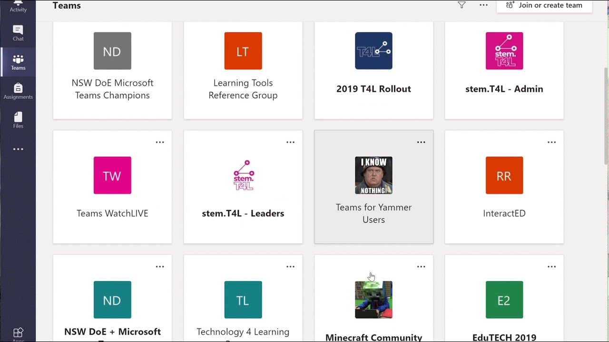
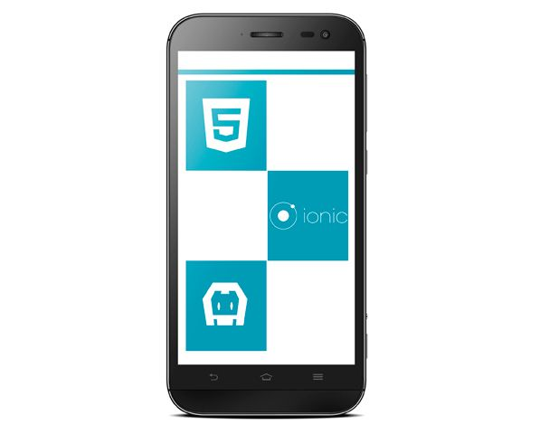
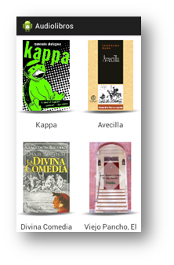
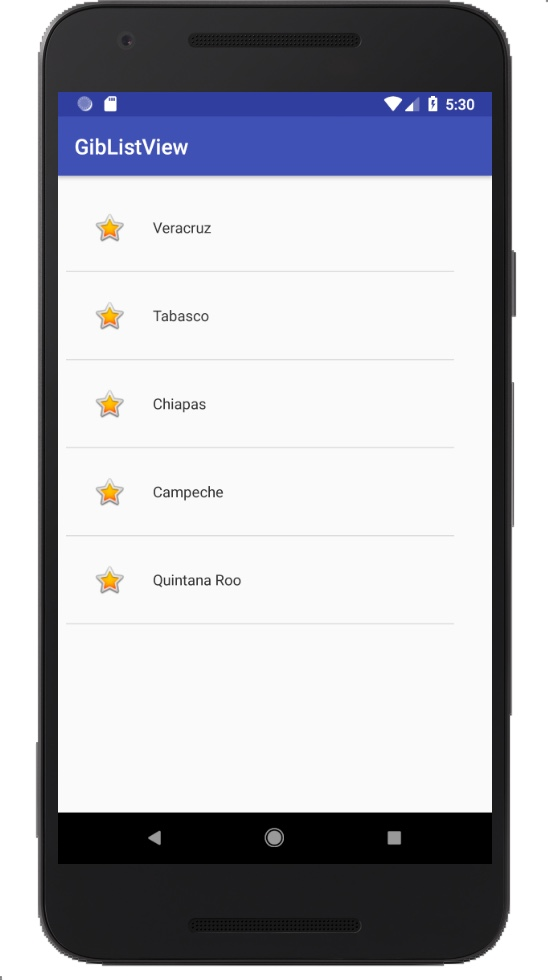
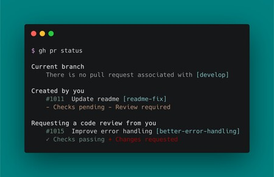
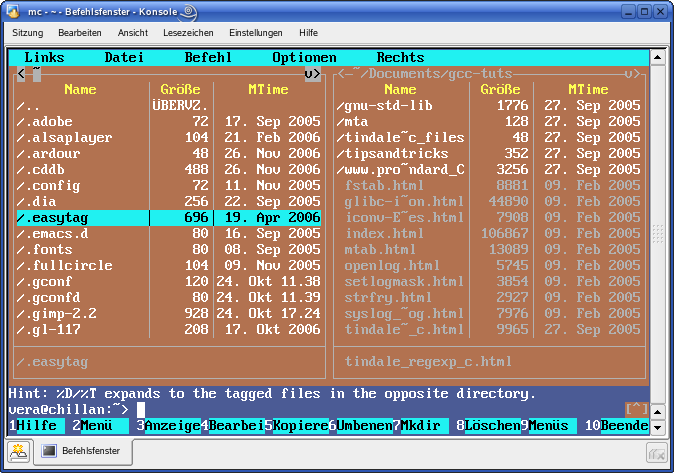
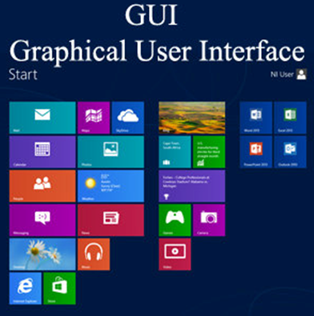
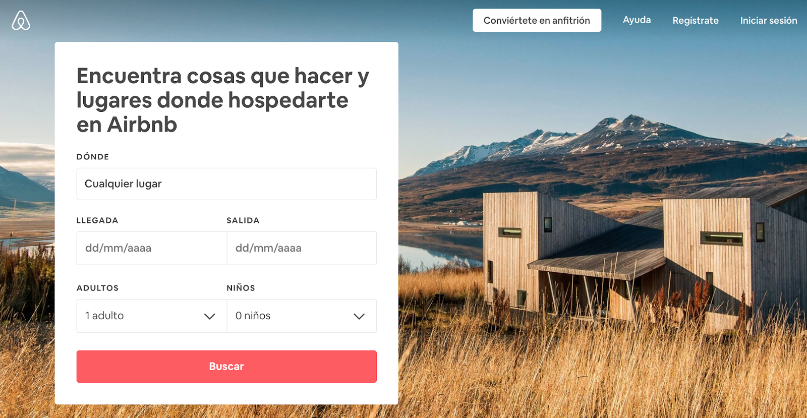
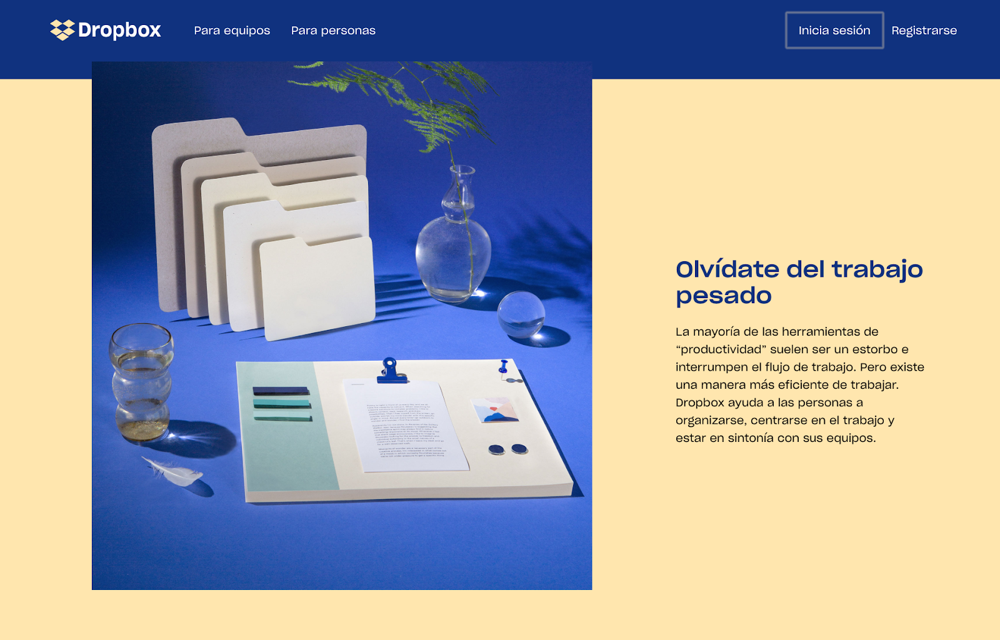
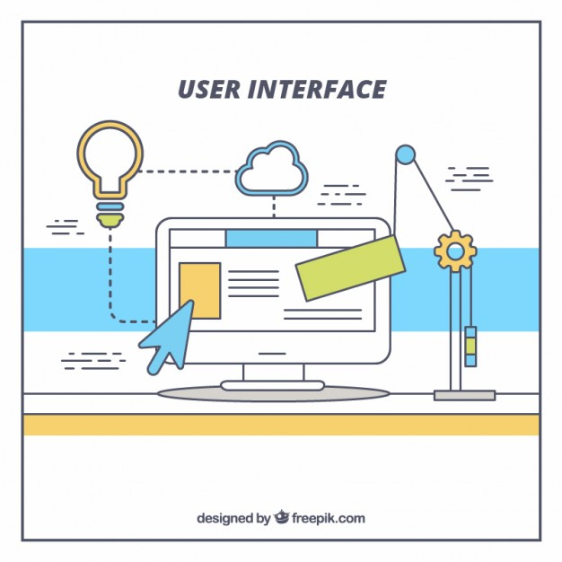

Vistas por Controlador
9 de Noviembre del 2020
<<<<<<< HEAD
- ¿Qué es un controlador?
- Grid View
- List View
¿Qué es?

- El modelo contiene la información con la que el sistema trabaja, proporcionándosela a la vista para que pueda mostrarla y permitiendo realizar cambios en ella desde el controlador.
- El controlador responde a acciones del usuario, modificando el modelo cuando sea necesario. Además, se comunica con la vista para que se actualice con los últimos cambios del modelo.
- La vista presenta al usuario la información del modelo.
GridView

Es un tipo de layout (diseño) que nos muestra una serie de elementos en forma de tabla y que podemos deslizar verticalmente. El GridView mostrará una cuadrícula de vistas, cada una de ellas puede representar diversos elementos. Estas vistas se mostrarán en forma de cuadrícula, automáticamente scrolleable arriba y abajo.
Para definir un GridView se requieren cuatro elementos. Para empezar, deberemos introducir el GridView en un layout para mostrarlo al usuario. En segundo lugar, necesitaremos una actividad que lo muestre y lo controle. Esta actividad también será la que recibirá los eventos que el GridView genere. En tercer lugar, precisaremos un adaptador, definido en otra clase, que rellene cada elemento del GridView, introduciendo la información necesaria en cada uno. Por último, necesitaremos un layout para los ítems del GridView. El adaptador utilizará este diseño y lo modificará con la información de cada elemento.
ListView

Es una vista de adaptador que no conoce los detalles, como el tipo y el contenido, de las vistas que contiene. En su lugar, la vista de lista solicita vistas a pedido de un ListAdaptersegún sea necesario, como para mostrar nuevas vistas a medida que el usuario se desplaza hacia arriba o hacia abajo.
=======
Interfaz de Usuario
Estilos y Temas
Ciclo de vida
Estado
Intefaz de usuario
¿Qué es la interfaz del usuario o UI?
La interfaz gráfica de usuario (GUI) es el contenido gráfico mediante el cual se visualiza información del equipo en una pantalla. Casi todos los programas tienen alguna clase de interfaz visual, que sirve al mismo tiempo para mostrar información al usuario y como un mapa de navegación entre diferentes comandos.
Por ejemplo, si abres un archivo de Word, la interfaz de usuario te permitirá ver la información que contiene en la pantalla, pero también te permitirá interactuar con un sinfín de herramientas para modificar el documento.
Hay interfaces visuales mucho más complejas e intuitivas, como las de los teléfonos inteligentes, que están diseñadas para disminuir al máximo la curva de aprendizaje. También la interfaz de los sitios web tiende a estar diseñada para que cualquier visitante pueda usarla sin necesidad de conocimientos específico previos.
¿Qué tipos de interfaz de usuario existen?
Interfaz de línea de comandos (CLI)

Entre los lugares donde se utiliza la interfaz de línea de comandos (Command Line Interface en inglés), se encuentran los ordenadores DOS. El usuario ve una línea de comandos y un indicador que indica la posición actual. La interacción sólo es posible mediante la introducción de comandos.
La máquina los procesa y, a continuación, muestra otra línea con una indicación de entrada. Este tipo de sistema operativo está obsoleto. Las CLI han sido reemplazadas en gran medida por las GUI.
Interfaz de usuario de texto (TUI)

Una interfaz de usuario de texto (Text User Interface), está orientada a los caracteres. La ejecución se realiza en modo texto de hardware, pero la pantalla también se utiliza ampliamente. El programador sólo tiene 256 caracteres en una fuente. La navegación se realiza normalmente con el teclado y no con el ratón.
Además, esta interfaz también se utiliza en cargadores boot y en todos los programas de configuración de la BIOS. La instalación de sistemas operativos también utiliza este tipo de interfaz.
Interfaz gráfica de usuario (GUI)

La interfaz gráfica de usuario (Graphical User Interface) es la interfaz más utilizada en la mayoría de las aplicaciones de software modernas. Se refiere a la ventana que contiene todos los elementos del software.
La interacción del usuario se produce a través del ratón y el teclado. También se pueden utilizar botones y menús en la ventana del software. Esta ventana es la interfaz entre el usuario y el software. El diseño de una interfaz gráfica de usuario puede determinarse con la ayuda de un diseño de pantalla.
¿Cuáles son las características de la interfaz de usuario?
Claridad
Una buena interfaz transmite la información de manera precisa para evitar que el usuario cometa errores durante la interacción.
Concisión
Se trata de darle al usuario solo la información que necesita y pide.
Coherencia
Esta característica es la que hace intuitiva una interfaz, permitiéndole a la persona crear patrones de uso de manera sencilla y práctica.
Flexibilidad
Una buena interfaz también se caracteriza por permitir que el usuario restaure elementos y deshaga acciones.
Atractivo visual
Cuando se trata de experiencia del usuario, nunca puede subestimarse la importancia del atractivo visual. Además de tener grandes funcionalidades, una buena interfaz es agradable a la vista.
A través de estas características se logra que el usuario realmente tenga una conexión con algún dispositivo tecnológico y, por supuesto, lo prefiera ante otras alternativas similares.
¿Cómo funciona el diseño de una interfaz de usuario?
El diseño de la interfaz del usuario debe estar desarrollado bajo altos estándares de calidad.
Dentro de una página web, aplicación o cualquier herramienta digital, el diseño de la interfaz del usuario debe garantizar tolerancia a los errores, personalización, control, adecuación al aprendizaje y, sobre todo, conformidad con las expectativas del usuario.
Además, el diseño de una interfaz busca la adecuación a la tarea y la autodescripción.
Asimismo, existen principios de coherencia y calidad gráfica que deben seguirse para desarrollar una interfaz, como emplear códigos de colores para apoyar las tareas de los usuarios, minimalismo y estandarización.
¿Cómo se relacionan la interfaz de usuario y la experiencia del usuario?
El diseño de la interfaz del usuario debe estar desarrollado bajo altos estándares de calidad.
La experiencia del usuario hace referencia a la manera en que una persona percibe y siente su interacción con algún canal online, principalmente una página web o blog.
Si la interfaz no es de calidad y carece de las características importantes, lamentablemente la experiencia no será gratificante.
A través de una buena interfaz que la experiencia e interacción resulta satisfactoria e, incluso, natural.
Ejemplos de interfaces de usuario sobresalientes
Una buena interfaz de usuario permite a los usuarios alcanzar el objetivo que buscaban cuando llegaron a nuestro sitio web; su objetivo es que lo hagan con facilidad y sin confusión.
Airbnb

Este servicio de alojamiento ha priorizado la facilidad con que se reserve una estadía desde la pantalla de inicio. El usuario es invitado y dirigido de manera simultánea y cortés para comenzar a planificar su estancia.
Los únicos campos que deben especificar los usuarios durante esta búsqueda inicial son: elegir el destino al que desean ir, la duración de su estadía y la cantidad de invitados. Al dejar de lado los filtros adicionales hasta el siguiente paso, el proceso se simplifica, es amigable y accesible.
Dropbox

Dropbox tiene una de las interfaces de usuario más fáciles de entender. Su estructura organizativa en carpetas y archivos es fácilmente reconocible para cualquiera que haya usado una computadora antes.
En términos de capacidad de aprendizaje, no hay mucho que el usuario promedio no sepa qué hacer desde el principio. Es natural que la mayoría de los usuarios arrastren y suelten archivos desde sus escritorios a la página sin que ellos sepan si es posible o no; lo hacen solo porque es muy familiar.
Amazon
La interfaz de usuario de Amazon está diseñada para aumentar la probabilidad de que los visitantes realicen una compra. Para este fin, la barra de búsqueda es el punto focal en cada página.
La barra de búsqueda facilita la exploración de los productos, pero también permite filtrar, refinar y ver los resultados de búsqueda de una manera abierta y legible.
Conclusión

Las mejores interfaces son aquellas que nos hacen olvidar que estamos interactuando con una máquina, dispositivo o aplicación.
En cambio, nos muestran que nos comunicamos con un elemento que forma parte indispensable de nuestras vidas y que es tan real y útil como nuestras manos y sentidos.